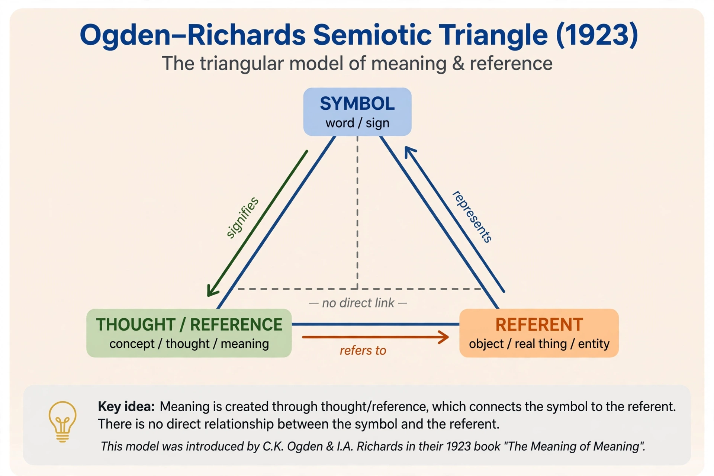

Semantics

Semantics is the study of meaning in language: what words, phrases and sentences mean, and how meanings combine. It is one of the core branches of linguistics alongside phonetics, grammar (morphology and syntax), and pragmatics, which studies meaning in context. The term was popularised by Michel Bréal's Essai de sémantique (1897).
Key ideas
Semanticists distinguish a word's sense (its place in the language system) from its reference (what it picks out in the world) — Gottlob Frege's classic example being the Morning Star and the Evening Star, which share a referent (Venus) but differ in sense. Words stand in relations such as synonymy, antonymy, hyponymy (spaniel is a kind of dog) and polysemy (one word, several related senses). Formal semantics, developed from the work of Richard Montague in the 1970s, treats natural language meaning with the tools of logic, analysing truth conditions and entailment: if "all cats are mammals" and "Felix is a cat", then Felix is a mammal.
Change and cognition
Meanings change over time — nice once meant "ignorant", from Latin nescius — a process studied by etymology and historical semantics. Cognitive semantics, associated with scholars such as George Lakoff, argues that meaning is grounded in bodily experience and structured by metaphor and prototypes rather than strict necessary-and-sufficient definitions.